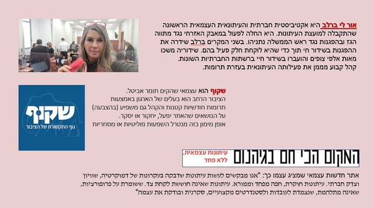

עיתונות עצמאית
חופש, מחויבות ואחריות לציבור
מושגי מפתח מהאגרון (גע במושג לפירוש)
עיתונות עצמאית
מימון המונים
מחויבות לציבור
עיתונות ציבורית
עיתונות מסחרית
הגדרה
מהי עיתונות עצמאית?
עיתונות שאינה כפופה לגופי תקשורת גדולים ומנתקת עצמה מהעיתונות הציבורית ומהעיתונות המסחרית הרגילה.
אתרי עיתונות **בתקשורת הדיגיטלית**, שמציגים **עיתונות חוקרת עצמאית**, שלא תלויה בבעלי הון (עם קשרים מסחריים) ולא בפוליטיקאים (עם יכולת השפעה על רגולציה).
הם ממומנים על ידי הציבור ומצהירים על **מחויבות רק לציבור**.
למה עכשיו?
סיבות לעליית העיתונות העצמאית
- אכזבה מהעיתונות המסחרית: שפועלת משיקולים כלכליים ונתונה לפיקוח מצד בעלי ההון.
- אכזבה מהעיתונות הציבורית: שפועלת לעיתים משיקולים שמתאימים לפוליטיקאים שמפקחים עליה.
- צמיחת התקשורת הדיגיטלית: שמאפשרת יצירה והפצה של חדשות לקהלים רחבים בעלויות נמוכות יחסית.
ביקורת התקשורת
העין השביעית
דף הבית של העיתונות העצמאית, ובו דוגמאות רבות של תחקירים וסיקור עיתונאי עצמאי.
ע"ע עיתונות עצמאית (העין השביעית)
מיטב התוצרת העיתונאית של האתרים העצמאיים במקום אחד.
מהי עיתונות עצמאית? (העין השביעית)
דברי פתיחה לכנס העיתונות העצמאית הראשון: למה צריך אותה? והאם היא קיימת?

דוגמאות
אתרים וגופים מובילים
המקום הכי חם בגיהנום
שקוף - גוף התקשורת של הציבור
(תומר אביטל)

דמוקרטTV
מהדורות חדשות עצמאיות.